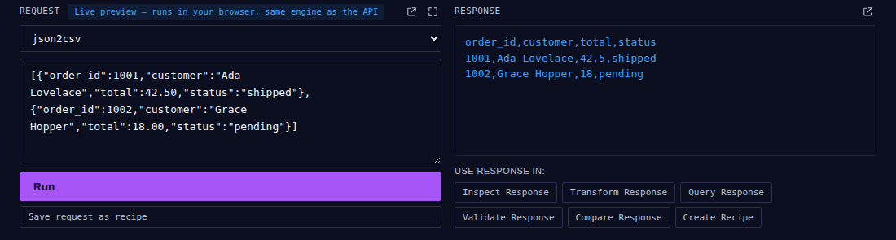

Work directly with APIs
An API is simply a way for one computer system to ask another system for information.
Instead of copying an API response between several different tools, Recast lets you work with the data in one place.
A real example: "Show me today's orders"
Say your own backend already returns today's orders as JSON — however you fetched it, you now have that response. Paste it into the Request panel, pick what you want to do with it, and click Run. This is the real, live API Workbench, not a mock-up:

Now you have the same response sitting right there, and six buttons let you keep working with it without retyping anything into a different tool:
If the response happens to be CSV or XML rather than JSON, the tools that need JSON convert it into a working copy automatically — your original response is never silently overwritten, and a small banner tells you when you're looking at that converted copy.
For developers
The same requests you run in the playground work identically over HTTP, using your account's access token as a Bearer token:
curl https://tryrecast.app/v1/convert \ -H "Authorization: Bearer rk_live_..." \ -H "Content-Type: application/json" \ -d '{"mode":"json2csv", "input":"[...]"}'
Three endpoints, matching the same modes as the browser tool:
POST /v1/convert—mode: json2csv, csv2json, json2xml, xml2json, flatten, unflatten, json2yaml, yaml2json, json2markdown, markdown2jsonPOST /v1/diff—mode: diffJson, diffXml, diffCsv (sendinputA/inputBinstead ofinput)POST /v1/schema— infers a JSON Schema (draft-07) from a sampleinput
10,000 calls per month, resets on the calendar month, usage tracked and returned with every response. This is a summary, not the full reference — request formats, authentication details, and code examples in several languages live in the complete API documentation on the main tool page.
Common questions
What is an API, in simple terms?
A way for one computer system to ask another system for information.
What can I do with an API response in Recast?
Inspect, transform, compare, and export it — all in one place, without copying it between separate tools.
Can I save an API workflow to reuse later?
Yes — using "Save request as recipe," which ties into Recast's broader automation features.